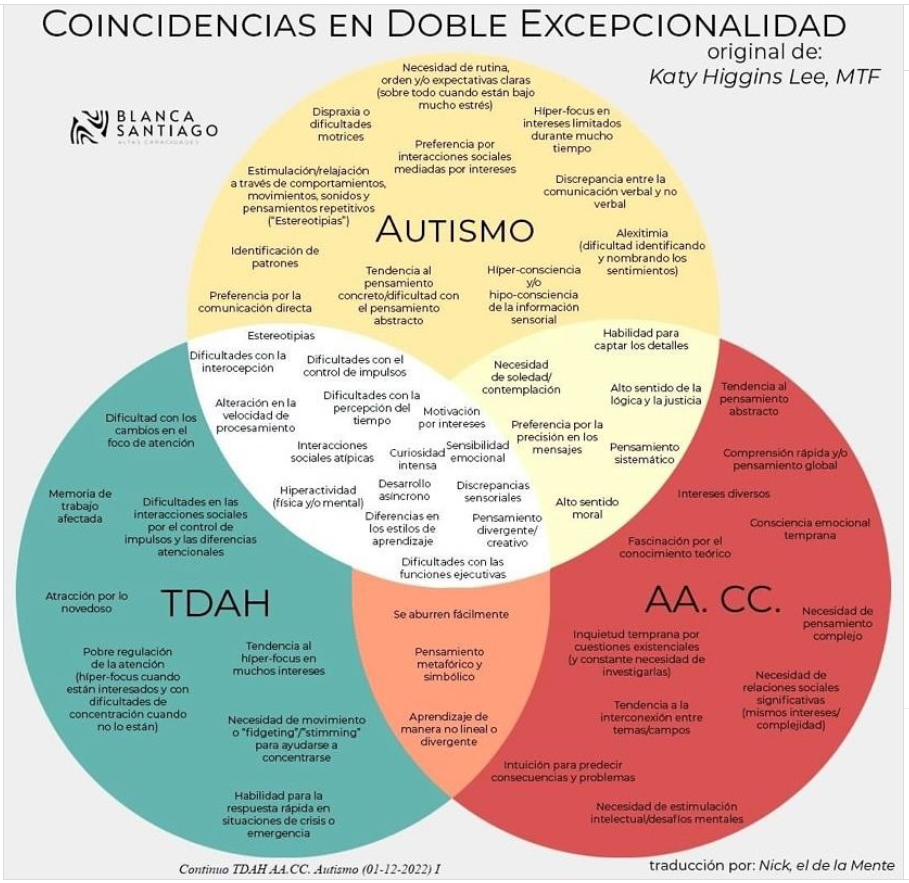

Visión, negocio e integración
Anto Studios · ATS · Sistema integrado
Presentación para clientes, CTOs, CEOs y jefes de desarrollo.
Esta presentación incluye el contenido de todos los documentos: Visión (modularización + IA + producción), Oportunidades de negocio (Anto e integrado), Integración ATS + Anto, Mejoras (Anto Studios), Logs y flujos para IA. Presupuesto de desarrollo (fases, equipo, sprints, tiempos).
Sobre mí
Triple excepcionalidad: contexto y por qué importa en equipo
Qué es la doble y la triple excepcionalidad
Conviene partir de una idea clara: la doble excepcionalidad (2e) es la coexistencia de altas capacidades intelectuales con uno o más trastornos del neurodesarrollo — por ejemplo TDAH o TEA (autismo). La triple excepcionalidad (3e) se da cuando confluyen altas capacidades y dos de esas condiciones a la vez (TEA + TDAH + altas capacidades). No es una etiqueta del manual diagnóstico, sino un concepto clínico y educativo que describe un perfil real, en el que alto potencial y dificultades conviven y se solapan. Las capacidades pueden enmascarar los síntomas del TDAH o del TEA, y a la inversa el TDAH o el TEA pueden hacer que el talento pase desapercibido. Por eso muchas personas 2e/3e han recibido antes etiquetas injustas — “vago”, “despistado”, “raro” — y el diagnóstico en la edad adulta llega tarde, con trayectorias que no reflejan lo que realmente pueden aportar. Comparar a una persona 2e/3e con el resto “en igualdad de condiciones” no es equitativo: no se parte del mismo punto de partida ni se procesan las cosas de la misma forma.
Por qué esta sección
Esta sección está pensada para que el equipo comprenda el perfil de un compañero o compañera con triple excepcionalidad (TEA/Asperger, TDAH y altas capacidades). No se trata de pedir un trato “especial”, sino de que lo que a veces choca — ciertos comportamientos o necesidades — no se interprete como capricho o falta de esfuerzo: forma parte de cómo funciona esa persona. Cuando el entorno es muy rígido o exige “hacer como todos”, quien presenta este perfil no siempre encaja; cuando hay autonomía, claridad y espacio para enfocarse en lo que se le da bien, su aportación suele ser muy alta. La evidencia en entornos laborales muestra que las personas neurodivergentes aportan innovación, pensamiento analítico, creatividad, hiperfoco y resolución de problemas complejos cuando el contexto se adapta a sus necesidades; no se trata de tratarlas “igual que a todos” en todo, sino de aplicar ajustes razonables que igualan el terreno.
Algo que ocurre con frecuencia en personas 2e/3e es que pasan desapercibidas o son subestimadas. En contextos donde su forma de hablar, organizarse o relacionarse no encaja, se las interpreta mal y puede parecer que “no dan el nivel”. Ellas, a la vez, pueden tener la sensación de que “los demás no siguen” o no valoran lo mismo. Se crea así un círculo de desencuentro: hasta que no llega el momento de las pruebas concretas — entregas, resultados, análisis — no se ve el nivel real, y entonces suele haber sorpresa: se esperaba poco y el resultado está por encima. Eso a veces genera incomodidad en quien había subestimado. Además, buena parte del trabajo de quien presenta este perfil — organización, documentación, análisis previo, correcciones, trabajo en segundo plano — no es visible del mismo modo que lo son una reunión o una respuesta rápida; por eso la percepción puede ser que aporta menos de lo que realmente hace. Explicar este perfil desde el principio ayuda a que las expectativas sean justas y a que no se pierda talento por malentendidos.
Es habitual que quien tiene este perfil se pregunte a veces si está en el lugar que le corresponde — o si sí lo es. Lo que suele tener claro es que tiene mucho que aportar y que le frustra ver las cosas mal hechas o que no se aproveche el potencial cuando hay margen para mejorar. No es una queja: esa intensidad y esa necesidad de que las cosas estén bien hechas forman parte de su forma de ser. Ponerlo sobre la mesa sirve para que el equipo entienda el contexto.
También es frecuente que se le exija hacer las cosas como los demás — por ejemplo preguntar a una persona concreta en vez de poder investigar por su cuenta. La realidad es que avanza más rápido cuando puede indagar y resolver por sí mismo. Reunirse con alguien para explicarle un problema complejo y que le ayude a resolverlo no suele servirle: le retrasa, y al final es él o ella quien lo resuelve por su cuenta. No es que rechace el trabajo en equipo; es que su forma de procesar problemas complejos es más eficiente en autonomía. Se recomienda respetar esta forma de trabajar cuando el resultado está a la altura: permitir investigar y resolver sin obligar a seguir el mismo canal que el resto.
Otra cosa que suele ocurrir es que se le perciba como alguien sin empatía o que dice cosas que no gustan. No es que no le importe el otro; es que su forma de comunicar es más directa y literal, algo muy común en el TEA: dice lo que piensa sin el mismo “filtro” social que otras personas usan de forma automática. A veces lo que dice se interpreta como frío o brusco cuando la intención no es herir. Es útil que, si algo que dice molesta, se le indique con claridad para que pueda ajustarlo; lo importante es no asumir que falta empatía cuando en realidad se trata de otra forma de expresarse.
Por último: no debe ser tomado como la medida de nada, ni para bien ni para mal. No como el referente de “cómo hay que ser” ni como el que “no llega”. Siempre habrá diferencias abismales entre su forma de funcionar y la de otros; usarlo como vara de medir — para lo bueno o para lo malo — no es justo con nadie.
Diagrama: coincidencias en doble y triple excepcionalidad
El diagrama de Venn siguiente ayuda a visualizar cómo se solapan Autismo (TEA), TDAH y Altas Capacidades (AA. CC.). Cada círculo representa los rasgos típicos de una condición; donde se cruzan dos círculos aparece lo que comparten dos; el centro, donde se cruzan los tres, es lo que define la triple excepcionalidad. Verlo así permite entender por qué el perfil no es “suma de tres etiquetas”, sino una combinación propia.

Resumen por condición
Cada condición aporta rasgos que, en conjunto, explican tanto fortalezas como dificultades. A título orientativo:
Autismo (TEA / Asperger): Dificultad con los cambios y la inflexibilidad, mantener amistades, intereses muy definidos, comunicación no verbal, necesidad de rutinas, sensibilidad sensorial, regulación emocional, patrones repetitivos, dificultad para entender perspectivas ajenas e ironía, perfeccionismo, ansiedad.
TDAH: Dificultad para mantener la atención, impulsividad, hiperactividad motora, organizar tareas, regular el humor, seguir instrucciones, olvidos frecuentes, desorganización, búsqueda de estímulos, impaciencia, gestión del tiempo, cambios de humor, procrastinación.
Altas capacidades (AA. CC.): Pensamiento abstracto, curiosidad intensa, rapidez de aprendizaje, creatividad e imaginación, vocabulario amplio, memoria destacada, intereses variados y profundos, perfeccionismo, sensibilidad emocional, necesidad de autonomía, resolución de problemas, pensamiento crítico, persistencia en lo que interesa, idealismo y sentido de la justicia, autodemandas altas, intuición desarrollada.
Solapamiento de dos condiciones
Cuando coinciden dos de las tres condiciones, aparecen rasgos que suelen darse en esa combinación. A título orientativo:
Autismo + TDAH
- Dificultad para establecer y mantener relaciones, regular la atención, planificar y organizar; problemas de comunicación; sensibilidad a estímulos; problemas de sueño; gestión del tiempo; procesamiento de la información; autorregulación; contacto ocular; entender ironía y sarcasmo; hiperactividad; anticipar consecuencias; tomar decisiones; conducta impulsiva.
TDAH + Altas capacidades
- Aburrimiento con tareas repetitivas; frustración ante el fracaso; pensamiento rápido; necesidad de novedad; dificultad para terminar proyectos y trabajar en equipo; desorganización; intensidad emocional; hiperfoco en intereses; sensibilidad a la crítica; impaciencia; dificultad para seguir normas/rutinas; tendencia a la distracción; perfeccionismo; ansiedad; baja autoestima.
Autismo + Altas capacidades
- Perfeccionismo; intereses intensos y específicos; sensibilidad a estímulos; necesidad de lógica y orden; dificultad en la socialización; alta autodemandas; comunicación directa y sincera; pensamiento no convencional; aislamiento social voluntario; dificultad para entender normas sociales implícitas; ansiedad social; hipersensibilidad; intolerancia a la frustración; rigidez cognitiva; necesidad de precisión.
Triple excepcionalidad: rasgos del centro (las tres condiciones)
Cuando confluyen las tres condiciones suelen aparecer los rasgos que se listan a continuación. La investigación en doble y triple excepcionalidad (2e/3e) describe tanto fortalezas — razonamiento avanzado, pensamiento creativo y divergente, hiperfoco en lo que interesa, sentido fuerte de la justicia — como dificultades — rendimiento irregular según el contexto, función ejecutiva, regulación emocional, fatiga por sobreestimulación, interacción social. Conviene entender que no son “defectos” que haya que corregir, sino parte del perfil neurobiológico. Para el equipo: exigir a una persona 3e exactamente lo mismo que al resto en todo tiene un efecto desigual — en algunas áreas queda en desventaja y en otras su rendimiento puede ser muy superior. Un enfoque que tenga en cuenta las fortalezas y permita ajustes razonables (autonomía, instrucciones claras, entorno predecible) es lo que permite que este perfil aporte de forma singular.
- Intensidad emocional
- Perfeccionismo
- Sensibilidad a la frustración
- Problemas de sueño
- Ansiedad
- Dificultad para iniciar tareas
- Hiperfoco
- Sentido de la justicia
- Pensamiento divergente
- Fatiga mental por sobreestimulación
- Dificultad en la autorregulación emocional
- Hipersensibilidad
- Necesidad de control
- Tendencia a la reflexión profunda
- Dificultad en la interacción social
- Baja autoestima (en contextos inadecuados)
En resumen, para el equipo: Conocer la triple excepcionalidad sirve para dos cosas. Primero, para no interpretar como capricho o falta de esfuerzo lo que forma parte del funcionamiento neurodivergente. Segundo, para poder diseñar entornos — equipos, procesos, expectativas — donde el rendimiento y la aportación puedan ser realmente altos. No se trata de conceder privilegios, sino de que lo que a veces choca tenga sentido y de que el talento no se pierda por malentendidos. Cuando hay dudas, lo más útil es preguntar a la persona con claridad en lugar de asumir.
Referencias y lecturas
- Katy Higgins Lee, MTF — diagrama original; adaptación Blanca Santiago.
- Nesplora, “Doble excepcionalidad: altas capacidades, TEA y TDAH”.
- Diagnosticatea, “Doble excepcionalidad: altas capacidades y TDAH”.
- Frontiers in Education, “Twice-exceptional students: a systematic review” (2025).
- Gifted Child Quarterly, “An operational definition of twice-exceptional learners” (Reis et al.).
- Investigación sobre neurodiversidad en el trabajo: ajustes que igualan el terreno (autonomía, instrucciones claras, entorno predecible).
Visión: modularización, IA y producción
Sistema modular, framework propio e integración con IA para generar y publicar aplicaciones de forma controlada.
Estado actual
- Editor visual con secciones, layout flexible, modo aislado y variantes.
- Librería: ui-components y featured-components; store (estado de página, secciones, estilos globales) y exportación multi-framework en diseño.
- Monolito Nx: varias apps y libs en un solo repo; fuente de verdad en memoria/localStorage y JSON de variantes.
Evolución natural: todo en uno
El sistema integrado es la evolución natural de Wix (crear sitios), Trello (gestión de tareas y sprints), Figma (diseño y componentes) y CI/CD (análisis, calidad, despliegue), unificados de forma que un agente pueda hacer lo que hoy hace un desarrollador (diseñar, configurar, analizar, publicar) y los devs centren sus esfuerzos en mejorar la IA propia de la empresa para construir mejores productos, no en tareas repetitivas repartidas entre muchas herramientas.
Objetivo a futuro
- Sistema modular: Núcleo del builder desacoplado, reutilizable por UI humana o por agentes IA.
- IA como diseñador/desarrollador: Dado un brief, la IA elige componentes, los configura y genera o actualiza la estructura (schema de página + datos).
- Framework propio: Componentes + design tokens + reglas de composición como base común para humanos e IA.
- Producción controlada: Preview → staging → publicación con rollback y auditoría.
Capas del sistema
API del builder (headless) → Crear/actualizar/eliminar páginas y secciones, aplicar variantes, validar schema, generar preview
Núcleo de negocio → Modelo de página (schema), registro de componentes, export
Framework → ui-components, featured-components, variantes y temas
Schema de página como contrato
Página = lista de secciones ordenadas. Cada sección: type (hero, features, pricing…), id, visible, variant, content/config, styles/layout. Estilos globales (tema, fuentes, colores) forman parte del schema. Este JSON es lo que el editor persiste, lo que el exportador usa para generar HTML/React/Angular, y lo que la IA puede generar o modificar vía API.
Registro de componentes como catálogo
Catálogo maquinaable: tipos de sección con nombre, descripción, props/config (schema JSON), variantes disponibles, preview. Extender el section-type-registry a una API de registro que devuelva tipos disponibles, schema de configuración por tipo y validación de content/config. Así editor e IA saben qué se puede colocar y qué campos tiene cada bloque.
Separación de runtimes
Runtime de edición: app Angular (editor + preview en tiempo real). Runtime de solo lectura (producción): misma app sirviendo solo vista preview con datos inyectados, o sitio estático generado por export, o app que lee schema desde CMS/API. El motor que interpreta el schema y renderiza debe poder usarse en edición y producción sin depender de la UI del editor.
Integración con IA: idea central
La IA no pinta píxeles: genera o modifica datos (schema de página + contenido). Recibe brief o instrucción y devuelve acciones sobre el schema (crear sección, editar contenido, cambiar variante, reordenar, eliminar) o el schema completo (o diff).
Flujos posibles
- A) IA como asistente en el editor: Usuario escribe en chat; la IA traduce a operaciones sobre el store; el editor aplica y el usuario ve el resultado.
- B) IA que genera la app desde cero: Input tipo "Crea una landing para un gimnasio boutique". La IA elige secciones (hero, servicios, horarios, precios, contacto), rellena contenido y variantes; output = schema completo; el sistema persiste, muestra preview y opcionalmente exporta o publica.
- C) IA que modifica app existente: "Añade una sección de ofertas" o "Traduce todos los textos al inglés"; la IA devuelve diff o nuevo schema; el sistema aplica.
Qué necesita la IA
- Documentación del catálogo (tipos de sección, campos, tipos de datos).
- Schema de página bien definido (JSON Schema o equivalente).
- API estable: listar tipos, crear/actualizar/eliminar sección, obtener/actualizar página, preview/export.
- Ejemplos de páginas (por nicho) para few-shot o fine-tuning.
- Opcional: reglas de buen diseño ("un hero suele ir primero", etc.).
IA propia vs existente
Existente (GPT, Claude): Uso vía API; se pasa contexto (catálogo, schema actual, instrucción) y se parsea la respuesta a operaciones; no requiere entrenar modelo; sí un "adapter" que convierta texto/JSON en llamadas al builder. Propia (fine-tuned): Entrenada con (brief, schema) o (instrucción, diff); control total, privacidad, coste predecible; requiere datos de calidad y pipeline. En ambos casos el contrato es el mismo: schema + catálogo.
API del builder (headless)
Exponer operaciones como API REST (o servicio in-process) para que UI, IA, CLI o CI las usen. La UI del editor sería un cliente de esta API. Endpoints sugeridos: GET /api/components, GET/PUT /api/pages/:id, PATCH /api/pages/:id/sections, POST /api/pages/:id/preview, POST /api/pages/:id/export, POST /api/pages/:id/publish. Autenticación: API keys u OAuth; permisos por proyecto; para publicar a producción solo roles con permiso explícito.
Integración a producción (flujo)
- Edición: Cambios en editor o vía API; se guardan como borrador.
- Preview: URL de preview por versión (preview.antostudios.com/proyecto/xyz?version=abc).
- Staging (opcional): Versión "lista para revisar" en entorno estable.
- Producción: Acción "Publicar": se marca una versión como "live" y el sistema de despliegue actualiza el sitio.
- Rollback: "Volver a la versión anterior" = marcar otra versión como live y redesplegar.
Opciones técnicas: Hosting estático (Vercel, Netlify, S3+CDN) con export que genera HTML/CSS/JS y CI que sube artefactos; o backend que sirve schema (producción lee "live" desde API/CMS); o híbrido. Seguridad: Solo ciertos roles pueden publicar; registro de publicaciones (quién, cuándo, qué versión); opcional doble aprobación en enterprise. IA: Puede proponer cambios; humano aprueba y publica; o IA publica en staging y producción sigue siendo manual.
Roadmap sugerido
| Fase | Objetivo |
|---|---|
| 1 (3–6 meses) | Schema estable, registro como catálogo maquinaable, export estable, API interna opcional. |
| 2 (6–12 meses) | API REST (páginas, componentes, preview), documentación para IA, adapter IA → acciones, pruebas con LLM. |
| 3 | Flujo Publicar (versión, export, deploy), preview y staging, rollback, permisos. |
| 4 (12+ meses) | Flujo "Generar app desde brief" con IA, fine-tuning si se desea, integración con aprobación y publicación. |
Resumen visión
Modularización: separar núcleo (schema, registro, export) de la UI; exponer API para que cualquier cliente (humano o IA) cree y modifique páginas. Framework propio = componentes + design tokens; la creación es generación de datos (schema). IA propia o existente genera o modifica schema; necesita catálogo documentado, schema claro y API estable. Producción: preview → staging → publicación explícita → despliegue con rollback y auditoría.
Documento completo: DOC_VISION_MODULARIZACION_IA_PRODUCCION.md
Oportunidades del sistema integrado
ATS + Anto Studios como un solo producto: hub de control y producción.
Propuesta de valor
ATS aporta: visión 360 (repos, calidad, seguridad, CI, dependencias, sprints, roadmap, informes IA). Anto Studios aporta: creación de sitios/landings y export a código o publicación. Integración aporta: un único lugar para controlar (métricas + activos vivos) y actuar (analizar, publicar, rollback, auditar), con quality gates y trazabilidad completa.
Diferenciación frente a productos por separado
| Aspecto | Solo ATS | Solo Anto | Sistema integrado |
|---|---|---|---|
| Visión de código y calidad | ✅ | ❌ | ✅ |
| Creación de sitios/landings | ❌ | ✅ | ✅ |
| Publicación controlada desde un hub | ❌ | Parcial | ✅ centralizado |
| Quality gate antes de publicar | N/A | ❌ | ✅ |
| Logs y flujos exportables para IA | Parcial | ❌ | ✅ unificado |
| Un solo producto comercial | No | No | Sí |
El cliente integrado compra "control total + producción desde un solo sitio".
Segmentos de cliente
| Segmento | Propuesta | Precio orientativo |
|---|---|---|
| Agencias y dev shops | Hub único: análisis + métricas + diseño + publicación con quality gate y auditoría | €199–499/mes por equipo |
| Product companies (marketing + dev) | Marketing diseña en Anto; ingeniería ve estado del repo y publicaciones; nadie publica sin quality gate | €2.000–8.000/mes |
| Empresas multi-marca | Todos los sitios y repos en un hub; publicación y rollback centralizados; informes IA por marca | Enterprise €10k–50k/año |
| Freelancers | Dashboard profesional para mostrar al cliente; publicar con un clic; historial y rollback | €49–99/mes |
Modelo SaaS por niveles
- Starter (€49–79/mes): 1–2 repos, 1–2 sitios, publicación básica (staging y prod), logs exportables; sin flujos guardados avanzados.
- Agency (€199–299/mes): Repos ilimitados o límite alto, 5–10 sitios, quality gate configurable, historial de publicaciones y rollback, flujos guardados como templates, export de logs para IA.
- Company (€799–1.999/mes): Múltiples workspaces, SSO, roles (vista, publicar, admin), integraciones (GitHub, Vercel, Netlify), informes IA incluidos, API del hub para CI/CD.
- Enterprise (€10k–50k/año): Instancia dedicada o VPC, SLA, soporte prioritario, formación, flujos y políticas a medida.
Add-ons y oportunidades por capacidad
- Add-ons: Más sitios Anto, más análisis de repos, informes IA premium, flujos automatizados (ej. cada merge a main → análisis + si pasa gate → publicar sitio X a staging), almacenamiento de logs y flujos (retención larga).
- Visión 360 + publicación: Vender "un solo panel" como producto premium; métrica de valor = reducción de tiempo "de decisión a producción".
- Quality gate: Empresas reguladas pagan por "no poder publicar si el repo no pasa"; posicionamiento "compliance y control".
- Logs y flujos para IA: Contexto exportable en tiempo real como feature diferenciador; en tiers altos incluido; en bajos como add-on.
- Flujos guardados y automatización: "Automatiza análisis + publicación"; cliente paga por ahorro de tiempo.
- Auditoría y cumplimiento: Historial de quién publicó qué y cuándo + logs exportables para finanzas, salud, sector público.
Go-to-market
Mensaje: "Controla tu código, tus sitios y tu producción desde un solo hub." Proof points: quality gate integrado, logs exportables para IA, rollback en un clic, visión 360 de repos y sitios. Canales: Desarrolladores y tech leads (Reddit, HN, dev.to, LinkedIn), agencias (LinkedIn, partnerships Vercel/Netlify), product companies (Product Hunt, contenido "unificar dev y marketing"). Packaging: Opción A = un solo producto "Angel Hub" con ATS + Anto + integración; Opción B = ATS y Anto por separado con "Hub" como add-on. Recomendación inicial: Opción A.
Métricas de éxito
Adopción (workspaces que usan ≥1 análisis ATS y ≥1 sitio Anto); % de publicaciones a prod desde el hub; uso de quality gate (publicaciones bloqueadas, clientes que activan gate); uso de logs/flujos para IA (exports y flujos guardados por cliente); MRR/ARR por tier y % de ingresos por add-ons.
Documentos: PLAN_OPORTUNIDADES_NEGOCIO_INTEGRADO.md, mejoras/DOC_INTEGRACION_ATS_ANTO_STUDIOS.md
Integración técnica ATS + Anto Studios
Cómo se conectan las dos apps: hub de control y motor de producción.
Resumen de cada aplicación
ATS (ats): Análisis técnico y scoring de repos (AST, SonarQube, seguridad, CI/CD, dependencias); Gemini para informes estratégicos y evaluación de código; dashboard 360 (Hero Hub, Sonar, CI, Security, Sprints, Roadmap, etc.). Rol: Hub de control para devs: ver todo (métricas, IA, sprints) y actuar sobre builds, deploys y activos Anto.
Anto Studios (businesss): Editor visual de páginas (secciones, layout, variantes, design tokens); store y schema de página; export React/Angular/Vue/Web Components. Rol: Motor de producción: lo que se construye (landings, webs) y lo que se exporta o despliega a preview/staging/producción.
Visión del sistema integrado
En el hub (ATS): visión 360 (código, calidad, seguridad, CI, sprints, IA) + visión de "activos vivos" (sitios Anto en preview/staging/prod) + acciones directas (lanzar análisis, ver informes, publicar a producción, rollback, auditoría). Anto es la herramienta de creación que el hub orquesta ("Crear landing para proyecto X", "Exportar proyecto Y"), monitoriza (estado de builds, última publicación) y desde la que se despliega (schema → export → deploy) con flujo unificado.
Cómo se complementan
- ATS aporta: Un solo lugar para ver todo; contexto para decisiones de publicación (score, Sonar pueden condicionar "Publicar"); IA estratégica que puede recomendar o alertar antes de publicar; trazabilidad si desde ATS se dispara una publicación de sitio Anto.
- Anto aporta: Activos listos para producción (páginas, landings, export); API del builder (cuando exista) para que el hub o la IA creen/editen páginas por API; en el futuro IA generativa que produce schema orquestada desde el hub.
Flujo "trabajar y producir en producción"
- Desde el hub: Dev ve panel "Anto Studios" (lista de sitios, estado borrador/staging/prod); elige proyecto, ve preview; pulsa "Publicar a producción" o "Promover staging → prod"; el hub llama a API de Anto (o deploy); resultado se muestra y queda registrado.
- Desde Anto: Dev diseña, guarda, genera preview/staging; puede ir al hub ("Abrir en Hub") para ver métricas del repo e informes IA y desde ahí "Publicar a producción" si se centraliza en ATS.
- Reglas: Solo ciertos roles pueden publicar; el hub puede exigir que el repo pase quality gate antes de permitir publicar; rollback y auditoría en un solo lugar.
Integración técnica por niveles
| Nivel | Descripción |
|---|---|
| 1. Dashboard unificado | En ATS: panel "Anto Studios" / "Sitios" con lista de proyectos (API REST de Anto o config), enlaces a preview/staging/prod, "Abrir en editor". |
| 2. Acciones desde el hub | POST /api/anto/publish (projectId, versionId, target); POST /api/anto/rollback; disparar export (React/Angular/Vue) y descargar ZIP. |
| 3. Quality gate | Política: solo permitir Publicar si ATS score > X y Sonar quality gate passed; el hub consulta métricas y habilita/deshabilita "Publicar" mostrando motivo. |
| 4. IA y automatización | Gemini con contexto "estado de sitios Anto"; si Anto expone API headless, hub invoca "Generar landing para X" → IA produce schema → Anto guarda y devuelve preview → hub ofrece "Publicar". |
| Despliegue | Opción A: dos apps separadas, comunicación por API. B: monorepo con app "Portal" que agrupa ATS y editor Anto. C: microservicios (Anto API + ATS API + frontend Hub). |
Visión 360 ampliada en el hub
Lo que ATS ya ofrece: Repo (Hero Hub), ATS/Sonar/CI/Security/Deps, Roadmap, Sprints, Bundle, DevEx, Licenses, Team culture, Web performance, informes LLM, Prompt optimizer. Con Anto se añade: Panel "Sitios/Landings" con lista de proyectos Anto, estado (borrador/staging/prod), última publicación, acciones (Abrir editor, Preview, Staging, Publicar a prod, Rollback, Export); reglas de publicación (indicadores de quality gate); auditoría (historial de publicaciones desde el hub). Resultado: 360 de código + activos vivos + producción.
Roadmap de integración
| Fase | Objetivo |
|---|---|
| 1 | Visión en el hub: panel "Sitios Anto"; Anto expone API lista de proyectos y estado. |
| 2 | Publicar desde el hub: botón que llama API Anto; Anto implementa POST /publish y registro de versión. |
| 3 | Quality gate: comprobar métricas ATS/Sonar antes de permitir publicar. |
| 4 | Rollback y auditoría: botón Rollback, historial en hub; Anto API de rollback y almacén de versiones. |
| 5 | IA: estado de sitios Anto en contexto Gemini; Anto API headless para schema (IA o automatización). |
Documento completo: mejoras/DOC_INTEGRACION_ATS_ANTO_STUDIOS.md
ATS · Automated Technical Scoring
Hub gamificado para mejorar todos los flujos de trabajo en equipo: análisis técnico, gestión de sprints, avatares, logros, IA e integración con reuniones y tareas.
Más que análisis: un hub para el equipo
ATS no es solo un analizador de código. Es una plataforma gamificada que une en un solo lugar el estado técnico de los proyectos, la gestión de sprints, el reconocimiento del equipo y la IA para mejorar día a día los flujos de trabajo. Pensada para que equipos y líderes tengan visión 360 y disfruten usándola.
Gamificación y avatares
- Hero Hub (base del repo): Avatar del proyecto con equipo visual (head, body, weapon, shield). Rank del repositorio (ej. S+), “Biological Vitals” e “Integrity” para que el estado del código se sienta vivo.
- Niveles y XP: Sistema de nivel (Rank L1, L2…), XP y barra de progreso (“Limit Break”). Los hitos técnicos (Dockerfile, CI, tests, cero vulnerabilidades, estructura Nx) suman XP al repo.
- Logros y trofeos: “Trophy Vault” con achievements (ej. Fort Knox Pure, CI Godspeed) y logros desbloqueables. Notificaciones de tipo achievement, kudos, level-up y cumpleaños.
- Equipo y pilotos: Avatares por desarrollador, equipo “equipado” con ítems que dan bonificaciones. Quests vinculadas a tareas del sprint con recompensas en XP.
Gestión de sprints (ciclo completo)
Módulo de sprints con todo el ciclo ágil en un solo panel, con pestañas y subcomponentes dedicados:
- Board: Tablero de tareas con drag & drop; tareas con prioridad, story points, asignación y estado (Backlog → Refined → To Do → In Progress → Done).
- Planning: Definición y planificación de sprints (objetivos, fechas, velocidad).
- Refinement: Refinamiento de backlog.
- Daily: Seguimiento de daily standups.
- Kudos: Reconocimiento entre compañeros.
- Achievements: Logros del equipo y por persona.
- Fun: Zona de juegos y dinámicas ligeras para el equipo.
- Vacations / Holidays: Vacaciones y festivos del equipo.
- Birthdays: Cumpleaños; notificaciones integradas.
- Share: Compartir estado o resúmenes del sprint.
Backend con módulo sprint-management (MongoDB): sprints, tareas, estados y métricas (velocity, metas) listos para integrar con IA y automatización.
IA y automatización
- Informes estratégicos (Gemini): La IA agrega datos de todos los proyectos del workspace (análisis, salud, métricas) y genera informes de negocio y técnicos en lenguaje natural.
- Evaluación de código con LLM: Scores y reportes en markdown sobre calidad, seguridad y recomendaciones.
- Automatización de tareas y reuniones (visión): Definición de sprints a partir de reuniones, sugerencias de tareas desde la IA, resúmenes de dailies o planning. El hub está preparado para consumir y mostrar estos flujos.
- Optimizador de prompts: Panel para generar y afinar prompts (code review, documentación, etc.) con IA.
Análisis técnico (base del scoring)
| Área | Capacidad |
|---|---|
| Proyecto / Repo | AST, métricas estructurales, análisis local y desde URL (clone + análisis) |
| Calidad | SonarQube, quality gates, code smells, bugs, vulnerabilidades |
| Seguridad | Dependencias, secretos expuestos, vulnerabilidades |
| CI/CD | Métricas de pipelines, tests, cobertura |
| Dashboard 360 | Repo (Hero Hub), ATS score, Sonar, CI, Security, Roadmap, Sprints, Bundle, DevEx, Licenses, Team culture, Web performance, informes LLM |
Experiencia y personalización
HUD con temas visuales (cyberpunk, Nintendo, Rayman, Matrix, retro, vaporwave, etc.) y paletas de color. Interfaz coherente en todos los paneles (headers, progress bars, cards, avatares) para que el hub se sienta un “juego” serio: mismo lenguaje visual en métricas, sprints y logros.
Para quién es ATS (standalone)
- Equipos que quieren mejorar flujos: Un solo sitio para código, sprints, reconocimiento (kudos, achievements) y diversión (fun, birthdays). Menos herramientas sueltas, más cohesión.
- CTOs y jefes de desarrollo: Visión 360 técnica + estado del equipo y de los sprints. Informes IA para presentar a negocio.
- Agencias y product companies: Evaluar repos, gestionar sprints por cliente o producto, y dar a los equipos una experiencia gamificada que motive.
Stack técnico
Proyecto: ats (NestJS + Angular + Nx). Documentación en el README del repositorio ATS.
Oportunidades Anto Studios
Editor visual que exporta código real: React, Angular, Vue, Web Components.
Propuesta de valor central
Editor visual que no solo diseña webs, sino que exporta componentes nativos para varios entornos (React, Angular, Vue, Web Components, HTML/CSS). Estética premium/cyberpunk/glass por defecto; componentes de nicho (gimnasio, restaurante, spa, portfolio) para verticales específicas y menor tiempo de entrega.
Ventaja competitiva
| Capacidad | Wix | Figma | Storybook | Anto Studios |
|---|---|---|---|---|
| Editor visual | ✅ | ✅ | ❌ | ✅ |
| Design tokens | ❌ | ✅ | ❌ | ✅ |
| Export React/Angular/Vue | ❌ | ❌ | ❌ | ✅ |
| Export Web Components | ❌ | ❌ | ❌ | ✅ |
| No-code + código real | ❌ | ❌ | ❌ | ✅ |
Component-as-Code: Lo que se diseña en el editor se entrega como código listo para integrar, no como HTML estático cerrado.
Líneas de negocio (Anto por separado)
- SaaS Web Builder (B2C): €29–49/mes. Target: pequeños negocios, emprendedores. "Tu web profesional en 30 minutos". Plantillas por industria, editor drag-and-drop, hosting, SEO básico. Nicho: negocios que valoran imagen (restaurantes, gimnasios, spas).
- Component Builder Pro (B2B): €99–299/mes por seat. Target: agencias, product companies. "Construye tu design system sin boilerplate". Export sin marca de agua, React/Angular/Vue/Web Components, API, preview para clientes, clonado de plantillas, colaboración multi-usuario, integración tipo Storybook.
- Template Marketplace: Revenue share 70% creador / 30% plataforma. Precios sugeridos: Basic €49, Industry €99–149, Full Business €199.
- Licencia Enterprise: €5.000–50.000/año. Design system centralizado, instancia dedicada, SSO/SAML, soporte prioritario, formación.
- SaaS vertical: "Anto Gyms", "Anto Resto", "Anto Spas" — €29–49/mes por vertical. Hosting, editor, plantillas del sector, funcionalidades de dominio (reservas, horarios, menús).
- Lifetime Deal (LTD): Para validación en AppSumo; €69–129 pago único.
Segmentos de cliente prioritarios
| Tier | Perfil | Precio orientativo |
|---|---|---|
| Tier 1 | Agencias de desarrollo: velocidad y reutilización; mantener design systems | €199–499/seat/mes |
| Tier 2 | Product companies: handoff diseño–desarrollo; single source of truth | €2.000–20.000/mes |
| Tier 3 | Freelancers: entregar componentes reales, aspecto profesional | €29–99/mes |
| Tier 4 | Dueños de negocios "de imagen" (restaurantes, fitness boutique, spas): web sofisticada sin agencia a €10k | €29–49/mes |
Casos de uso concretos
- Agencia → App del cliente: Diseño en Anto → Export a React/Next.js → Integración en proyecto del cliente → Cliente puede mantener el código.
- Equipo de design system: Componentes en el editor → Export como librería (NPM) → Distribución interna.
- Empresa SaaS multi-producto: Componentes reutilizables diseñados una vez → Export y uso en varios productos → Consistencia total.
- Freelancer: Entrega de componentes reales y código limpio → Cliente valora el entregable → Upsell (mantenimiento, nuevas secciones).
- Restaurante / Gym / Spa: Plantilla de nicho → Personalización en editor → Publicación o export para web y reservas/horarios.
Integración y ecosistema
Vercel/Netlify (publicación directa); Figma (plugin importación o export para documentar); Storybook (addon o generación de .stories en export); GitHub/GitLab (commit de código generado, ramas preview, CI/CD); pasarelas de pago para planes premium y marketplace.
Quick wins de negocio
- Export sin watermark → habilitar venta a agencias.
- Preview links para clientes → freelancers y agencias cobran más por presentaciones profesionales.
- Clonado de plantillas → clientes con múltiples sitios o proyectos.
- Export React (luego Angular/Vue) → mercado más grande y adopción en equipos técnicos.
- Design tokens en export → valor para enterprise y equipos de design system.
Riesgos y mitigación
Calidad del código exportado: Tests automáticos de export, opciones strict/flexible, feedback de comunidad. Soporte multi-framework: Priorizar 1–2 frameworks al inicio (React + Angular), documentar límites. No competir en precio con Wix en masa: Enfocarse en nicho y valor (código, estética, verticales).
Resumen ejecutivo Anto
Varias líneas en paralelo: B2C (builder por vertical o general), B2B (agencias y empresas, export de código), Marketplace (plantillas premium), Enterprise. Ventaja diferencial: editor visual + design tokens + exportación a código real, posicionando el producto entre no-code y código profesional; abre integración con IA, pipelines y ecosistema dev. Para negocio del sistema integrado (ATS + Anto), ver PLAN_OPORTUNIDADES_NEGOCIO_INTEGRADO.
Documento completo: DOC_OPORTUNIDADES_NEGOCIO.md
Mejoras – Anto Studios Editor
Lista priorizada de mejoras técnicas, de producto y UX para llevar el editor de MVP estable a producto comercial.
1. Mejoras críticas (base)
1.1 Sistema de exportación y publicación
- Reparar imports y rutas del módulo de exportación (libs/shared-components, servicios de export).
- Verificar y completar WebComponentExporter y generación de código limpio.
- Smoke test de build de producción (nx build) y flujo "Publicar" de punta a punta.
- Generador ZIP: HTML/CSS/Assets empaquetados y descarga desde el editor.
- Export multi-framework: React, Angular, Vue, Web Components con calidad producción (COMPONENT_EXPORT_ARCHITECTURE).
1.2 Layout y modo aislado (Smart-Adapt)
- Extensión Smart-Adapt a todos los componentes de layout: height: auto, min-height preservado, sin height: 100% que corte contenido.
- Componentes a adaptar: ui-card (todas las variantes), ui-list, ui-text, ui-button, ui-chip, draggable-box.
- Persistencia: guardar en JSON dimensiones y estilos flexibles; al restaurar, aplicar min-height en componentes de flujo y height fija solo donde corresponda.
- Interfaz unificada de modo aislado: sidebar a la derecha con pestañas (Contenido | Estilo | Avanzado), vista previa en vivo, evento applied consistente.
1.3 Redimensionamiento (resize)
Comprobar handles de resize (integración visual y usabilidad). Persistir y restaurar dimensiones personalizadas en el modelo de página (JSON).
2. Mejoras de componentes y UI
2.1 Librería base (ui-components)
Button: más variantes (Glitch, Neon, Glass), estados hover/active, iconos. Card: contenido dinámico real, bordes animados, glassmorphism, sin alturas fijas en host. Accordion: transiciones suaves, iconos configurables. Input/Form: estilos alineados (dark/cyberpunk), validación y feedback. Gallery: grid masonry real, lightbox. Map: integración real o placeholder, estilos custom (dark mode).
2.2 Componentes de negocio (featured-components)
Hero: vídeo de fondo, tipografía destacada, CTAs; en modo aislado editar texto, imagen y vídeo. Pricing Table: toggle mensual/anual, destacar plan "Recomendado". Testimonials: carrusel estable, avatares, valoración. Contact Form: validación real y feedback de envío. Restaurant Menu, Gym Schedule, Stats/Steps: estructuras claras y animaciones. Templates por sección: uso consistente de title, botones, espaciado y variables.
2.3 Consistencia visual y diseño
Design tokens sistemáticos (--theme-*, --fs-*, --sp-*). Empty states claros. Accesibilidad: ARIA, contraste, foco y navegación por teclado en editor y preview.
3. Mejoras de arquitectura y rendimiento
Limpieza: Eliminar legacy (wrappers antiguos), tree shaking, lazy loading de componentes de edición pesados. Rendimiento: Registro lazy de secciones, OnPush, distinctUntilChanged, vigilar bundle size. Estabilidad: Unit tests para exportadores y servicios críticos; CI con build, tests y export de ejemplo.
4. Mejoras de experiencia (UX) y móvil
Responsive y móvil: Auto-stacking a 1 columna en móvil, font scaling, touch targets, vista previa móvil en editor (toggle desktop/tablet/móvil). Editor: Drag & drop con feedback visual (placeholder, highlight), Undo/Redo, guardado automático con indicador, atajos de teclado. Onboarding: Tooltips o tour, documentación in-app o enlaces a docs.
5. Mejoras de negocio y producto
Botón "Publicar" visible y fiable (artefactos, descarga o hosting). Preview público (enlace temporal, opcional auth). Versiones: guardar versiones nombradas o por fecha. Flujo premium (pago o validación antes de export sin marca de agua). Límites por plan (páginas, exportaciones, dominios). Landing del producto hecha con Anto; plantillas por nicho (Gym Dark/Neon, Restaurante Elegant, Portfolio Minimal) listas para clonar.
6. Priorización sugerida
| Prioridad | Área | Mejora principal |
|---|---|---|
| P0 | Core | Export/publicación estable + ZIP |
| P0 | Layout | Smart-Adapt en todos los componentes |
| P1 | UX editor | Modo aislado unificado + persistencia |
| P1 | Móvil | Responsive y vista previa móvil |
| P2 | UI | Pulido de cards, forms, gallery |
| P2 | Negocio | Botón Publicar + flujo premium |
| P3 | Escala | Tests, CI, documentación y onboarding |
Documento completo: mejoras/DOC_MEJORAS.md
Logs y flujos exportables para IA
Buenas prácticas para trazabilidad, depuración y contexto que la IA puede consumir en cualquier flujo. ATS, Anto Studios y el sistema integrado se benefician.
1. Por qué logs en cada paso
- Depuración: Saber en qué paso falló un análisis, export o publicación.
- Auditoría: Quién hizo qué y cuándo (crítico al trabajar directo en producción).
- Contexto para IA: La IA lee un stream o dump de logs de un flujo y puede resumir, diagnosticar o recomendar el siguiente paso.
- Observabilidad: Duración por paso, tasa de error, volumen de operaciones.
- Reproducibilidad: Reconstruir un flujo para reproducir un bug o re-ejecutar un escenario.
"Cualquier paso" de la app
Paso = cualquier unidad significativa de trabajo. ATS: inicio/fin de análisis de repo, llamada a SonarQube, generación de informe Gemini, cálculo de score, guardado de resultados, error en adapter. Anto Studios: carga de página, cambio de sección (añadir/editar/eliminar), cambio de variante, guardado, inicio/fin de export por framework, inicio/fin de publicación, fallo de validación de schema. Sistema integrado: llamada desde hub a API de Anto, comprobación de quality gate, disparo de deploy, rollback. Cada uno emite al menos: timestamp, paso/acción, entidad (repo, proyecto, sitio, versión), resultado (ok/error), payload mínimo (ids, opciones), opcionalmente usuario/sesión.
2. Buenas prácticas: logs estructurados (JSON)
Una línea por evento (JSON Lines). Campos comunes: ts, level, app, flow, step, entity, result, duration_ms, message, payload (sin datos sensibles). Cada flujo largo tiene un flowId (UUID) para agrupar todos los pasos.
{"ts":"2026-02-20T10:00:01.000Z","level":"info","app":"ats","flow":"repo-analysis","step":"sonar.analyze","entity":"repo:github.com/org/repo","result":"ok","duration_ms":12000,"message":"SonarQube analysis completed"}
Niveles y sin datos sensibles
Niveles: debug (detalle interno), info (pasos completados), warn (degradación), error (fallo con código/mensaje). Filtrar por flow + entity para "todos los logs de este análisis". No loguear tokens, contraseñas, API keys ni PII; para auditoría usar user_id o identificador opaco.
3. Exportables en tiempo real
Stream: cliente (hub, CLI) consume eventos en vivo vía WebSocket/SSE o long-polling; logs en buffer/cola por flowId. Export: artefacto con todos los logs del flujo en JSON Lines o JSON; opcional resumen en texto para la IA. Backend: GET /flows/:flowId/logs (o event bus por flowId). En hub: panel "logs en vivo" y botón "Descargar log del flujo". Uso por IA: "Con estos logs, resume qué pasó, si hubo errores y qué recomiendas."
Export enriquecido: imágenes y Markdown
Para que la IA tenga cada vez más contexto, los flujos pueden generar además de JSON: imágenes (capturas o renders en hitos clave: preview del sitio, estado del editor antes/después, gráficos de métricas) y Markdown (resúmenes por paso o por flujo con enlaces a logs e imágenes). El export pasa a ser "resumen ejecutivo + detalle técnico + evidencia visual", de modo que las IAs especializadas den respuestas más precisas.
4. Guardar flujos
Flujo guardado: Secuencia de pasos que se puede nombrar, guardar y re-ejecutar. Ejemplos: "Análisis completo de repo", "Publicar sitio a producción", "Export React + ZIP". Puede ser template (definición de pasos + parámetros) o flujo ejecutado (instancia con flowId, logs, resultado). Template: usuario define pasos + parámetros y guarda con nombre; "Ejecutar flujo" selecciona template y rellena parámetros. Historial: cada ejecución con flowId, parámetros, resultado, enlace a logs; re-ejecutar o exportar para IA. IA: sugiere flujos, resume ejecuciones ("los últimos 5 análisis fallaron en Sonar") o genera flujo nuevo ("cada viernes analizar repo X y publicar sitio Y a staging").
5. Automatizar tests y escribirlos con un agente
El sistema de logs es especialmente útil para testing: un flujo real (análisis, export, publicación, etc.) queda registrado paso a paso. Con ese registro se puede:
- Automatizar tests: Re-ejecutar el mismo flujo en CI y comparar logs (o resultados) con el flujo de referencia; detectar regresiones sin escribir asserts a mano para cada paso.
- Escribir tests con un agente: Un agente (IA) recibe el export de un flujo real como contexto y genera tests (p. ej. E2E o de integración) que reproducen ese flujo. “Este flujo pasó en producción; genera un test que lo replique.”
Logs estructurados + flowId = contrato claro para humanos, IA y pipeline de tests.
5b. IA especializada por app y bot del cliente (visión)
IA especializada por app: Cada aplicación (ATS, Anto Studios, hub) puede tener una IA propia afinada con el contexto de esa app (catálogo de componentes, tipos de flujo, schema, logs + MD + imágenes). La IA de Anto entiende secciones, variantes y schema; la de ATS entiende repos, Sonar, sprints e informes. Así el cliente tiene un asistente que habla el lenguaje de cada herramienta.
Bot propio del cliente (tipo Claude): Una capa por cliente o workspace que gestiona la app del cliente: conoce su proyecto, historial de flujos, publicaciones y contexto (logs + MD + imágenes). El cliente da comandos por voz o texto ("cambia el botón del hero a azul", "publica a staging"); el bot traduce a acciones sobre el schema o al hub. Además el bot se puede clonar y llevar su conocimiento a otros proyectos o a proyectos de empresa (reutilizar mejores prácticas y flujos); puede dar tareas a agentes (delegar análisis, generación de contenido, ejecución de flujos); y puede analizar datos y métricas de negocio (tiempos de publicación, tasas de error, salud de repos, tendencias) y responder en lenguaje natural o generar informes. Muchas otras capacidades encajan en el mismo asistente (orquestación, reporting, delegación).
6. Resumen de capacidades objetivo
| Capacidad | Descripción |
|---|---|
| Logs por paso | Cada paso significativo emite evento JSON con ts, flow, step, entity, result, opcional duration y payload. |
| Flujo identificado | Flujos largos tienen flowId; todos los pasos llevan ese id. |
| Stream en tiempo real | Cliente se suscribe a eventos de un flowId (WebSocket/SSE o polling). |
| Export de logs | Descargar logs del flujo en JSON Lines o JSON, con o sin resumen. |
| Export enriquecido (imágenes + MD) | Flujos generan imágenes (capturas, previews, gráficos) y MD para más contexto a la IA (multimodal). |
| Contexto para IA | Pasar export de flujo para que la IA resuma, diagnostique o recomiende. |
| IA especializada por app | IA propia por app (ATS, Anto, hub) afinada con su contexto; asistente que habla el lenguaje de cada herramienta. |
| Bot del cliente (voz/texto) | Bot tipo Claude: comandos voz/texto, clonable (conocimiento a otros proyectos/empresa), dar tareas a agentes, analizar datos y métricas de negocio. |
| Automatizar tests | Re-ejecutar en CI y comparar con referencia; detectar regresiones. |
| Escribir tests con agente | Agente recibe export de flujo real y genera tests E2E/integración. |
| Guardar flujos como template | Secuencias reutilizables ejecutables por nombre. |
| Historial de ejecuciones | Guardar cada ejecución; re-ejecutar o exportar. |
7. Orden de implementación sugerido
- Fase 1: Estandarizar logs estructurados (JSON) en un flujo piloto; incluir flowId y step en cada evento.
- Fase 2: Persistir eventos por flowId y exponer GET /flows/:flowId/logs (y opcionalmente stream en vivo).
- Fase 3: UI en hub para "Ver logs en vivo" y "Exportar logs del flujo" al finalizar.
- Fase 4: Tipos de flujo (análisis, export, publicación) y guardar ejecuciones en historial con enlace a logs.
- Fase 5: Flujos guardados como templates y re-ejecución desde el hub.
- Fase 6: Integración con IA: export de logs como contexto a Gemini (u otro); respuestas en hub (resumen, diagnóstico, sugerencia).
- Fase 7 (opcional): Flujos como oráculo para tests: re-ejecutar en CI y comparar logs; y/o agente que genere tests a partir del export de un flujo real.
Documento completo: profundizar/DOC_LOGS_FLUJOS_IA.md
Resumen y próximos pasos
- Visión: Sistema modular (estado actual → objetivo): schema de página como contrato, registro de componentes, runtimes separados; IA que genera/modifica datos (no píxeles); flujos asistente / desde cero / modificar existente; API headless; producción controlada (preview → staging → prod con rollback); roadmap en 4 fases.
- Negocio integrado: Un solo hub (ATS + Anto): diferenciación frente a productos por separado; segmentos (agencias, product companies, multi-marca, freelancers); SaaS por niveles (Starter, Agency, Company, Enterprise); add-ons y oportunidades (quality gate, logs para IA, flujos, auditoría); go-to-market y métricas.
- Integración técnica: ATS = hub de control; Anto = motor de producción; flujo "trabajar y producir en producción"; niveles 1–4 (dashboard, acciones, quality gate, IA); visión 360 ampliada; roadmap de integración en 5 fases.
- ATS: Hub gamificado: Hero Hub, avatares, niveles/XP, trofeos, pilotos, quests; gestión de sprints completa (board, planning, refinement, daily, kudos, achievements, fun, vacations, birthdays, share); IA (informes Gemini, evaluación de código, automatización visión, optimizador de prompts); análisis técnico (Sonar, CI, Security, etc.); temas visuales; para equipos, CTOs y agencias.
- Anto Studios: Propuesta de valor (diseña una vez, usa en todas partes); ventaja competitiva (Component-as-Code); líneas de negocio (SaaS builder, Component Builder Pro, marketplace, enterprise, verticales, LTD); segmentos; casos de uso; integración ecosistema; quick wins; riesgos y mitigación.
- Mejoras (Anto): Críticas (export/publicación, Smart-Adapt, resize); componentes y UI (lib base, featured, consistencia); arquitectura y rendimiento; UX y móvil; negocio y producto; priorización P0–P3.
- Logs y flujos: Logs por paso; export enriquecido (imágenes + MD); IAs especializadas por app; bot del cliente (tipo Claude): comandos voz/texto, clonable (llevar conocimiento a proyectos/empresa), dar tareas a agentes, analizar datos y métricas de negocio; guardar flujos; tests; 7 fases.
Presentación completa a partir de los documentos en ideas/, ideas/mejoras/ y ideas/profundizar/. Febrero 2026.